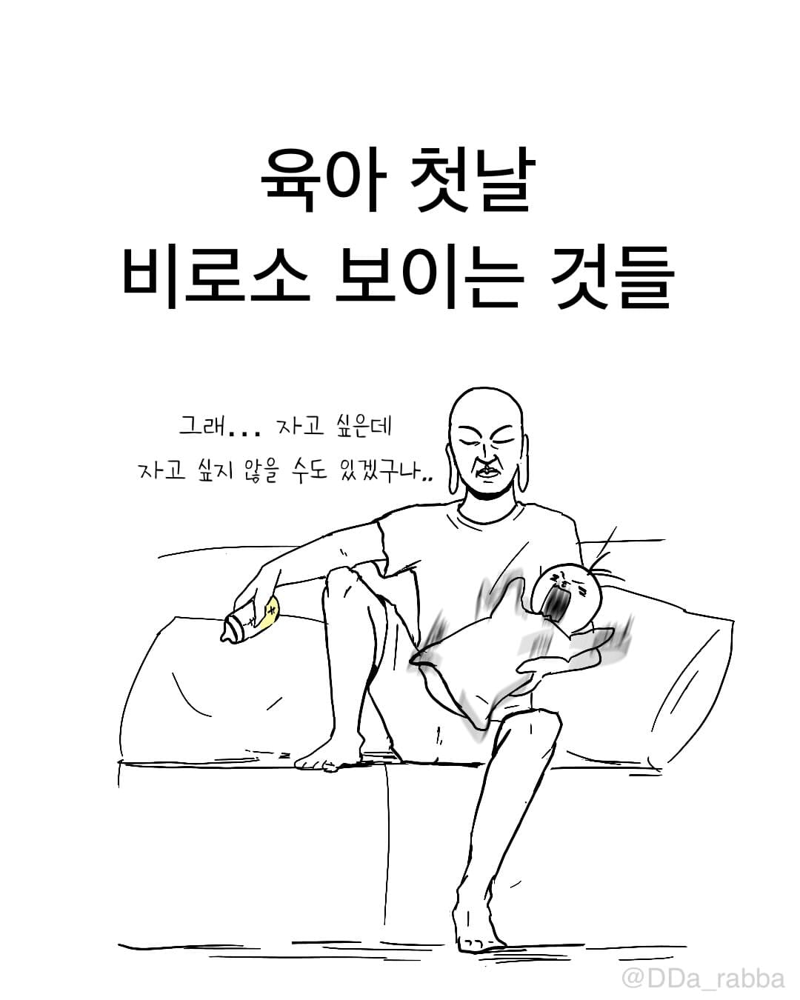
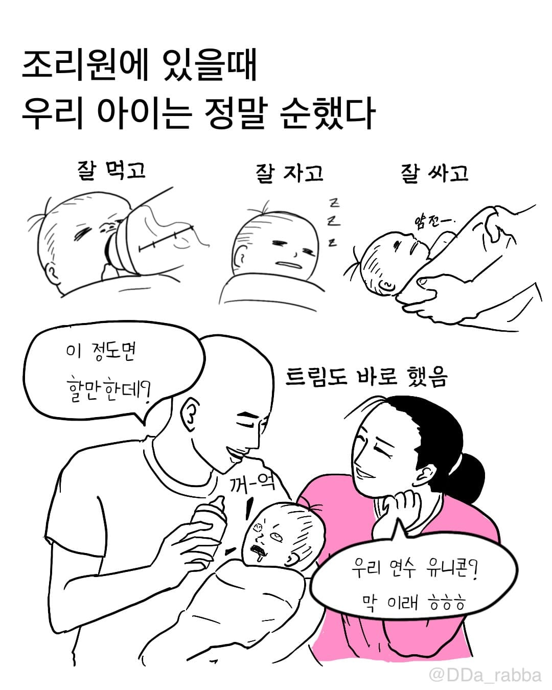
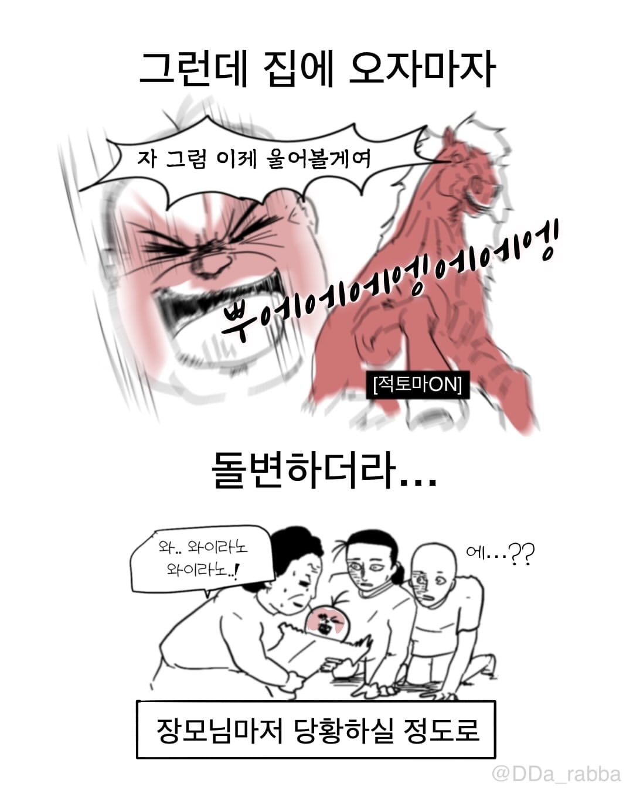
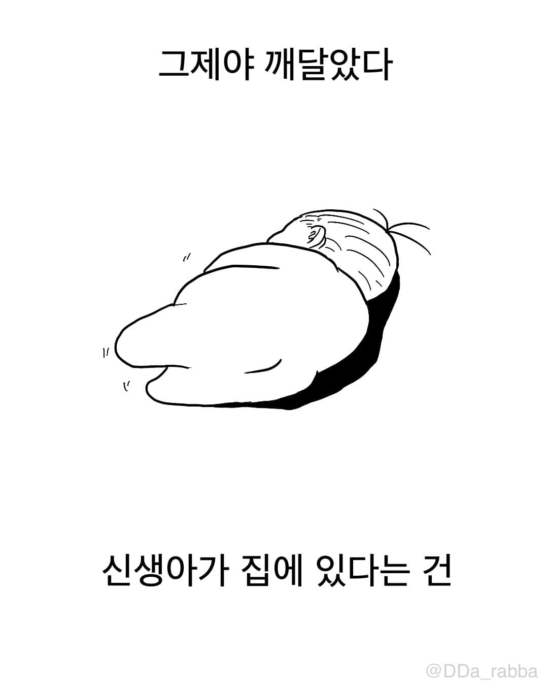
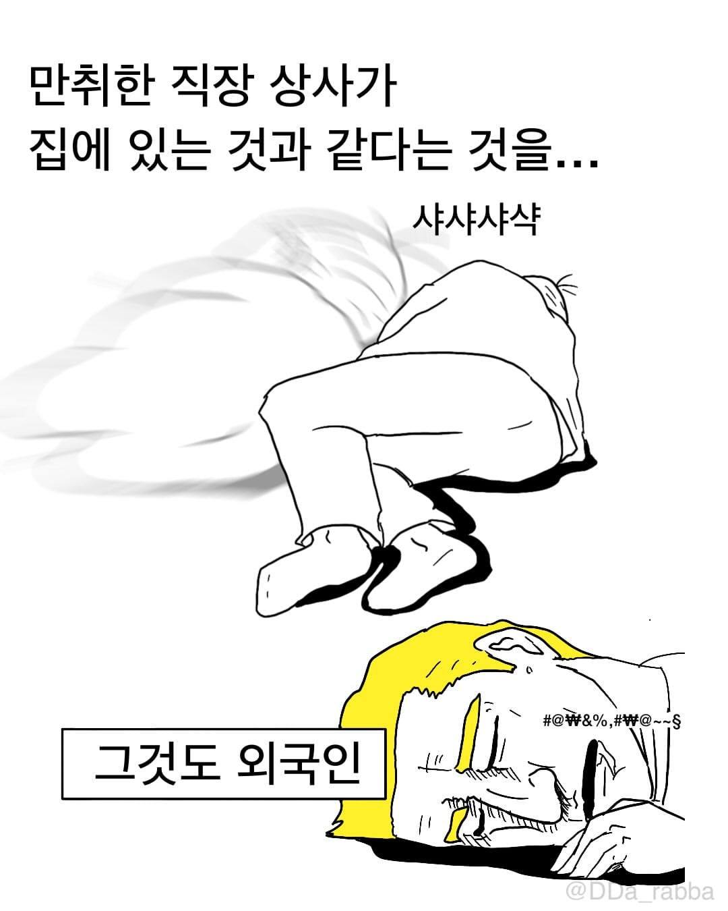
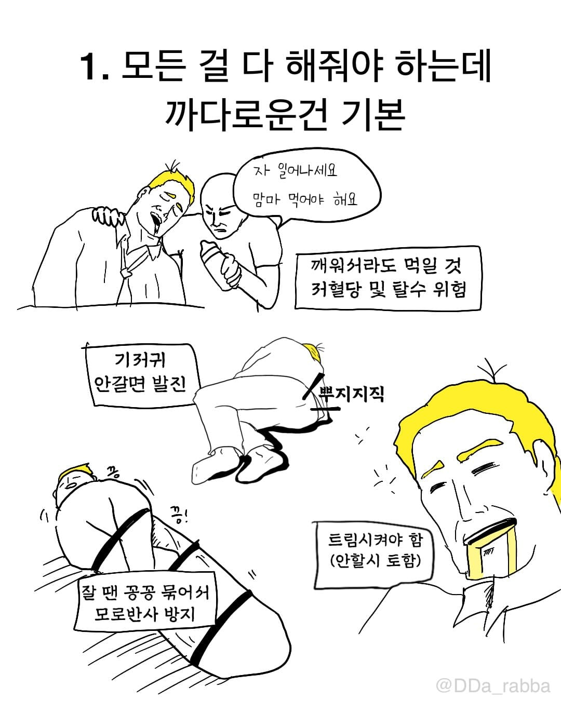
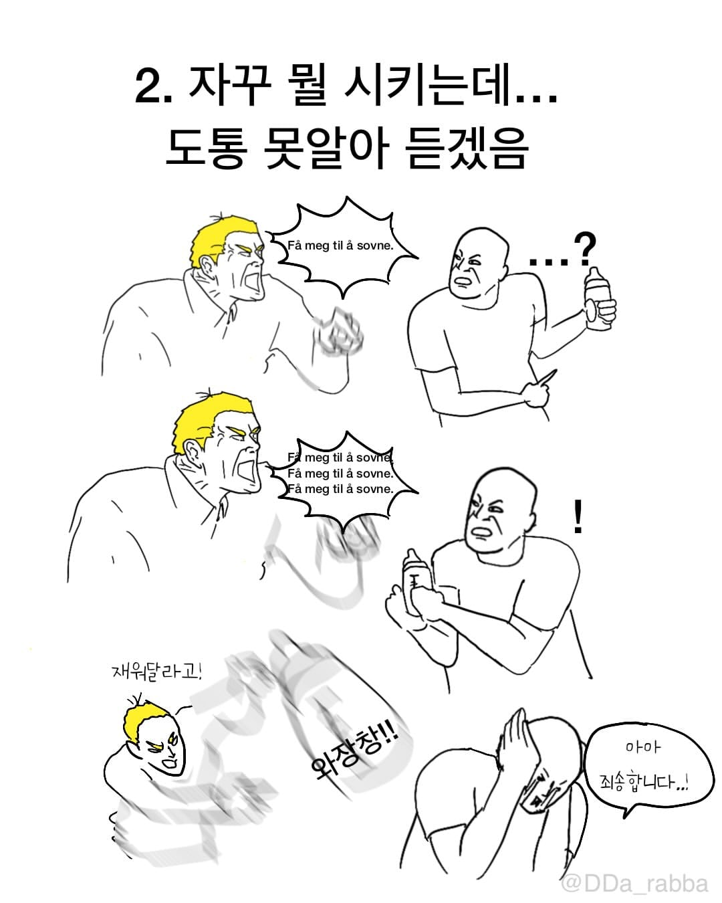
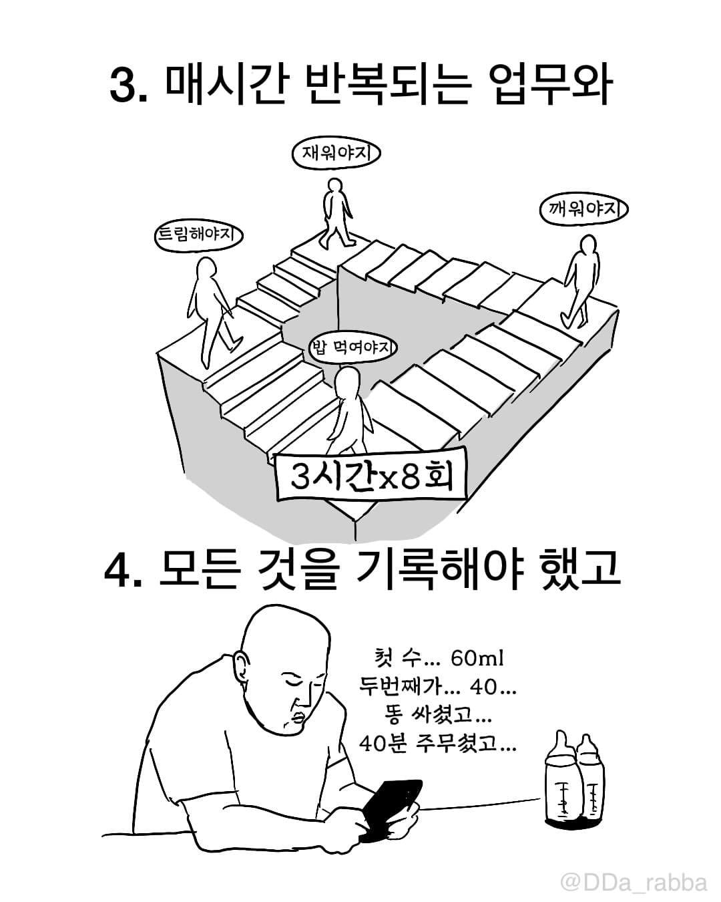
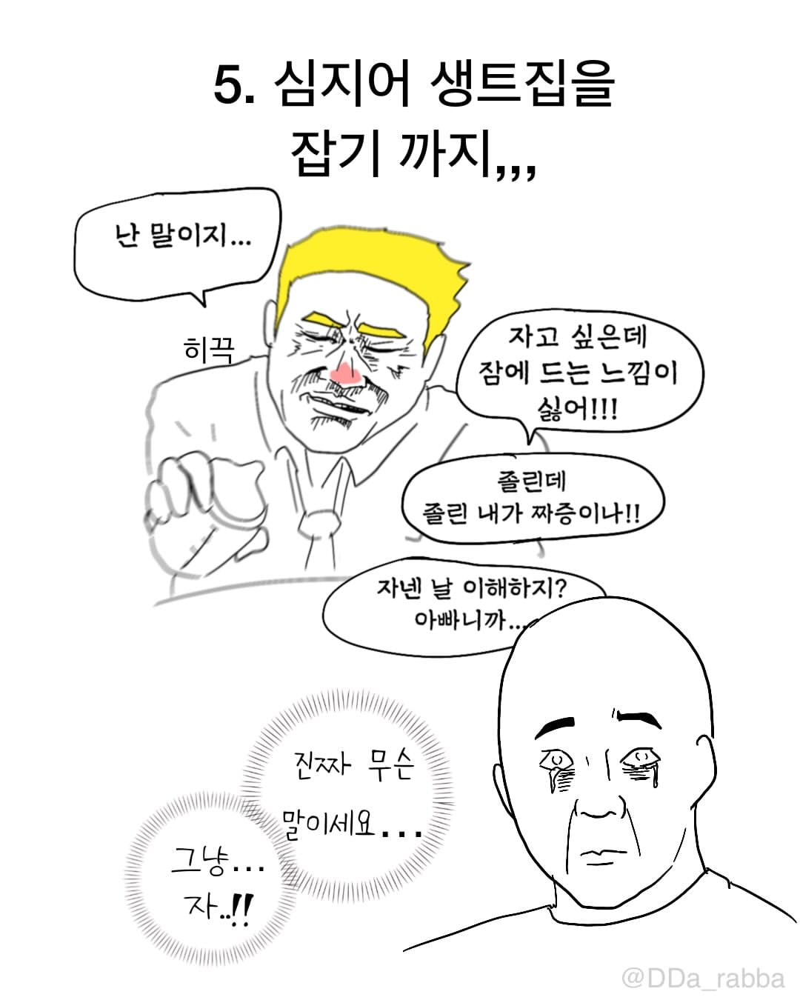
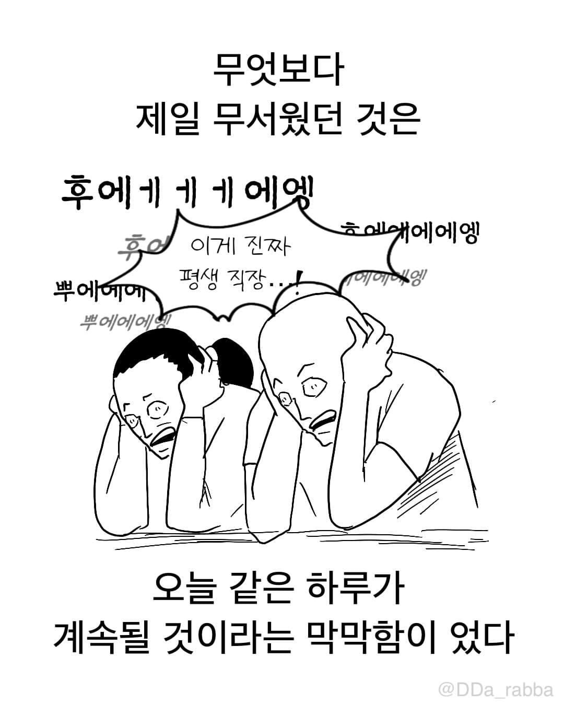
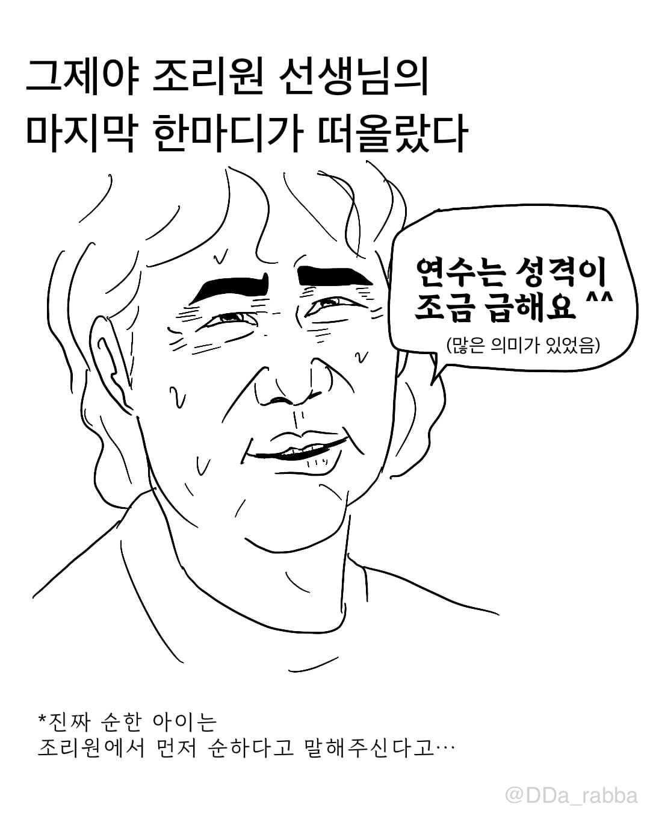
조금(많이)











조금(많이)
170일 여아 순하다
아들 연년생 둘째 300일
원더윅스땐 아직 쫌 힘듭니다
나는 반응도 없고 울지도 않아서 자폐인줄 알았다는데
어우 우리 조카는 휴직한 누나 부부에 옆 동네 사는 부모님까지 어른 넷이 달라붙었는데도 누나 수면 부족이랑 산후 우울증 겹쳐서 죽을라 하드만
부모찬스 못 쓰는 부부는 얼마나 개고생할지
한달 뒤에 나도 겪을 일인데 괜찮겠지했지만 막상 코앞에 닥치니 겁나네
어떻게든 된다 ㅋㅋ
잠이 부족해서 부부끼리 예민해질텐데
그때 서로 존중만하면됨
조리원에서도... 포기한 우리딸 ㅠㅠ
이런 거 보고 미리 싫어하기 보다는
정말 이쁜 게 더 크다는 걸 알리고 싶음
힘들기도 힘든데 내가 아빠가 됐다는 책임감과 뿌듯함
아기가 정말로 이쁘고 소중하고 생때같다는 게 더 크고
하루하루가 기적 같은 게 더 큼
부부가 힘합치면 다 한다 아들둘 키웠다
마누라 둘째 낳고 디스크 터져서 내가 거의 아기띠하고 했는데 힘든거보단 좀 귀찮지만 내새낀데 이쁘기만 하더라 울산살고 교대근무하면서도 다 되더라 힘내라
급해요!
힘들긴했는데 지나고보니 행복했더라
어차피 애가질거면 20대에 낳아야함. 나도 알고싶지않았음
ㄹㅇ낳을거면 무조건빨리... 체력전이다ㅜㅜ
첫째 딸을 키우며 진짜 이게 힘들다고? 그냥 밥주고 애 재우는게 뭐가 힘드냐? 했더니 연년생 아들이 생겼는데 이런 애를 2명이나 키운다고? 라고 생각이 바뀐...